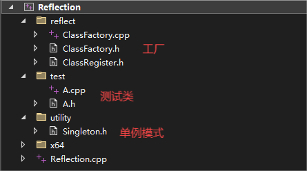
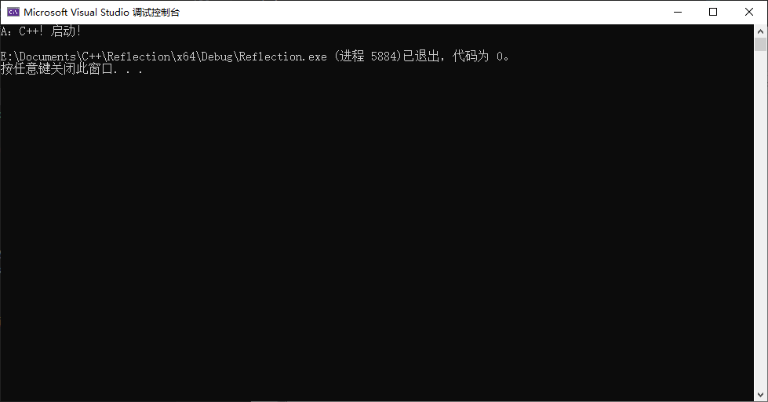

C++ 反射
c++构建反射系统的学习记录
一、类对象反射
当前框架

首先进行工厂的搭建：ClassFactory
1 |
|
将注册操作封装进类和宏中
1 | //ClassRegister.h |
单例模式类模版
1 | //Singleton.h |
测试类
1 |
|
测试
1 | //main函数 |

## 二、类成员数据反射You need to set
install_url to use ShareThis. Please set it in _config.yml.